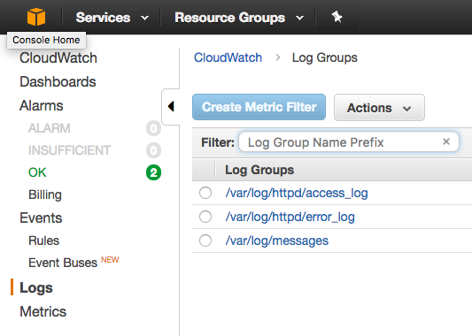
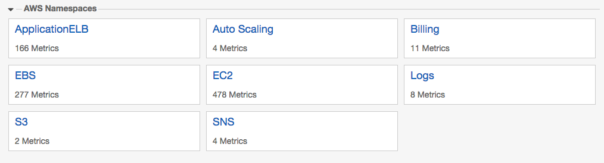

AWS / Terraform Workshop Series #3
Monitoring / Alerting / Log Aggregation
- Colin Jones, CTO at 8th Light
- @trptcolin
- based on 18F's public-domain workshop
Today's Goals
- Understand how TDD applies to infrastructure
- Know how to create alerts with CloudWatch and Simple Notification Service
- Understand instance profiles, roles, and policies
- Be able to refactor infrastructure
Test-driven Development (TDD)
- Write a failing test first
- Do the simplest thing that makes the test pass
- Check in
- Refactor
- Check in again
- Work in small batches, multiple check-ins per day
- (sometimes known as red - green - refactor)
Why TDD?
- Think like a user (user-first design)
- Make your design testable
- Create an executable specification of your system
- Work in small batches
- Keep your design simple
- Oh, and you get some automated tests
CloudWatch
AWS monitoring service
- Log aggregation and archiving
- Alerting
- Metrics dashboards
- Custom metrics
Let's create an alert!
First, we'll set up a topic in AWS Simple Notification Service (SNS).

Create SNS topic
resource "aws_sns_topic" "workshop_alerts" {
name = "workshop-alerts-topic-notify"
}
output "sns.arn" {
value = "${aws_sns_topic.workshop_alerts.arn}"
}
Subscribe to your topic
You can't subscribe via SMS or email using Terraform, because the endpoint must be authorized. So run terraform apply terraform and note the value of sns.arn it outputs. Then at your command prompt run:
aws sns subscribe --topic-arn <sns.arn> --protocol email \
--notification-endpoint "<email address>"Wait for the confirmation message and confirm that it's OK to notify you.
Then check that it works:
aws sns publish --message "Hello from SNS" --topic <sns.arn>Configure the alert via a CloudWatch Alarm
resource "aws_cloudwatch_metric_alarm" "dead_server" {
alarm_name = "Less than two healthy hosts in my cluster HelloWorldApp!"
namespace = "AWS/ApplicationELB"
metric_name = "HealthyHostCount"
statistic = "Minimum"
comparison_operator = "LessThanThreshold"
threshold = "2"
evaluation_periods = "1"
period = "60"
dimensions {
LoadBalancer =
"${aws_alb.workshop_alb.arn_suffix}"
TargetGroup =
"${aws_alb_target_group.workshop_alb.arn_suffix}"
}
alarm_actions = ["${aws_sns_topic.workshop_alerts.arn}"]
ok_actions = ["${aws_sns_topic.workshop_alerts.arn}"]
}terraform apply terraform
Provisioning and Deploying
- Multiple ways to do this. Chef / Puppet, or AMIs (use Packer)
- Simplest possible thing: a script in an S3 bucket
S3 Setup (Important!)
- Create a new S3 bucket through the AWS console
- S3 bucket names must be globally unique!
- Find/Replace all instances of
trptcolin-terraform-workshopin this project with your new bucket name - Push the code up:
cd code && ./deploy.sh
What about S3 security?
- Check out http://flaws.cloud/ to start thinking about S3 security
- Google "unsecured s3 bucket" for horror stories of exposed customer info
- Problem: Don't want to open S3 buckets to the world
- Solution: Lock it down, but give EC2 hosts access through an IAM role / instance profile
IAM Roles
- AWS API access without passing credentials around
- Works via EC2 instance metadata
- No need to store AWS credentials on the host!
- Associate roles with EC2 instances or many other services (Lambda, Elastic MapReduce, etc.)
Instance metadata
- Try SSH'ing into the bastion host
curl http://169.254.169.254/latest/meta-data/- AWS command-line tools on EC2 instances already know how to get this metadata, but custom tooling may need to be told
Update Launch Configuration
(new sections italicised)resource "aws_launch_configuration" "workshop_launch_conf" {
image_id = "ami-c481fad3"
instance_type = "t2.micro"
key_name = "Colins-Test-Key"
security_groups = ["${aws_security_group.web_sg.id}"]
associate_public_ip_address = true
lifecycle {
create_before_destroy = true
}
iam_instance_profile =
"${aws_iam_instance_profile.workshop_profile.arn}"
user_data = <<EOF
#!/usr/bin/env bash
aws s3 cp s3://trptcolin-terraform-workshop/provision.sh /root/
bash /root/provision.sh
EOFDon't forget to update both the user_data and the iam_instance_profile!
Instance Profiles
resource "aws_iam_instance_profile" "workshop_profile" {
name = "workshop_profile_web"
roles = ["${aws_iam_role.ec2_role.name}"]
}Define Role
resource "aws_iam_role" "ec2_role" {
name = "ec2_role_web"
assume_role_policy = <<EOF
{
"Version": "2012-10-17",
"Statement": [
{
"Action": "sts:AssumeRole",
"Principal": { "Service": "ec2.amazonaws.com" },
"Effect": "Allow",
"Sid": ""
}
]
}
EOF
}Define Policy
resource "aws_iam_role_policy" "s3_bucket_policy" {
name = "s3_deploy_bucket_policy_workshop"
role = "${aws_iam_role.ec2_role.id}"
policy = <<EOF
{
"Version": "2012-10-17",
"Statement": [
{
"Effect": "Allow",
"Action": [ "s3:Get*", "s3:List*" ],
"Resource": [ "arn:aws:s3:::trptcolin-terraform-workshop",
"arn:aws:s3:::trptcolin-terraform-workshop/*" ]
}
]
}
EOF
}Let's deploy!
terraform apply terraform- Once that's done, we have to kill the boxes so auto scaling will recreate
aws autoscaling describe-auto-scaling-instances
aws autoscaling detach-instances --instance-ids ???? \
--auto-scaling-group-name ???? \
--no-should-decrement-desired-capacity
aws ec2 terminate-instances --instance-ids ????- (this can be used generally to take a server out of rotation and create a new one)
Hello, World
After a couple of minutes, we should get an "OK" via SNS, and our host should be up. While we're waiting, let's take a quick look at what's in the S3 bucket.Let's get our logging working
resource "aws_iam_role_policy" "s3_bucket_policy" {
...
"Statement": [
{
"Effect": "Allow",
"Action": [ "s3:Get*", "s3:List*" ],
"Resource": [ "arn:aws:s3:::trptcolin-terraform-workshop",
"arn:aws:s3:::trptcolin-terraform-workshop/*" ]
},
{
"Effect": "Allow",
"Action": [ "logs:CreateLogGroup", "logs:CreateLogStream",
"logs:PutLogEvents", "logs:DescribeLogStreams" ],
"Resource": [ "arn:aws:logs:*:*:*" ]
}
]
}
EOF
}Don't miss the comma! terraform apply terraform
Now we can see (and search!) aggregated logs
Search tips: http://docs.aws.amazon.com/AmazonCloudWatch/latest/logs/FilterAndPatternSyntax.html
CloudWatch metrics
Let's see what kind of metrics we get from ELB!
Refactoring
...is a disciplined technique for restructuring an existing body of code, altering its internal structure without changing its external behavior.— Martin Fowler, https://www.refactoring.com/
Refactoring
Its heart is a series of small behavior preserving transformations. Each transformation (called a “refactoring”) does little, but a sequence of transformations can produce a significant restructuring. Since each refactoring is small, it’s less likely to go wrong. The system is kept fully working after each small refactoring, reducing the chances that a system can get seriously broken during the restructuring.
Refactor our Terraform script
- Move all the networking stuff (VPC, subnets, security groups, routing tables, gateway) into a script called
networks.tf - Put the roles and profile stuff into
roles.tf - Put our bastion host definition into
bastion.tf - Then the autoscaling group and ALB will go into
autoscaling.tf - Finally, we'll put alerting into
monitoring.tf.
When you're done, run terraform plan terraform and make sure nothing will change.
Review
- We looked at test-driven development by analogy
- We created an alert
- We passed an AWS role to an EC2 host
- We built a provisioning and deployment system
- We set up log aggregation
- We saw how to view metrics
- We refactored our infrastructure code